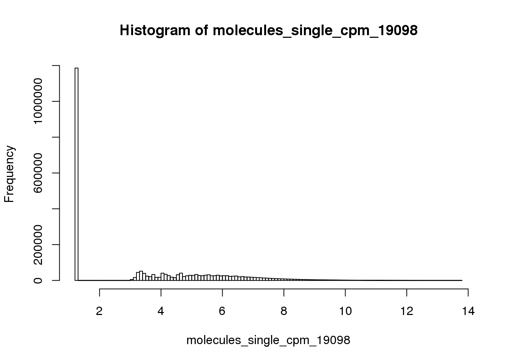
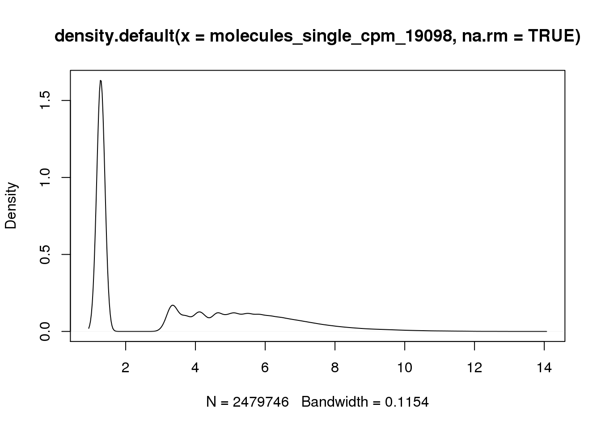
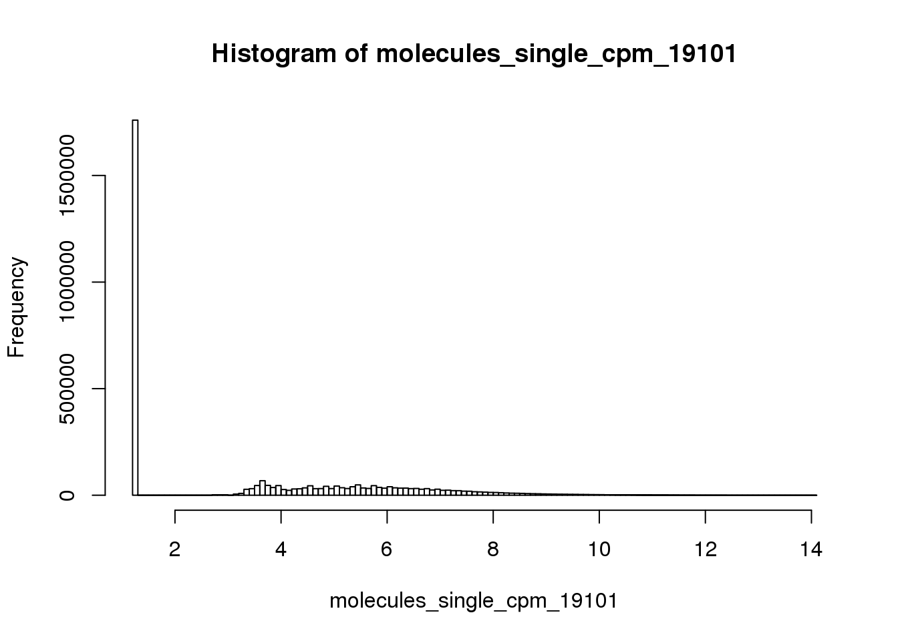
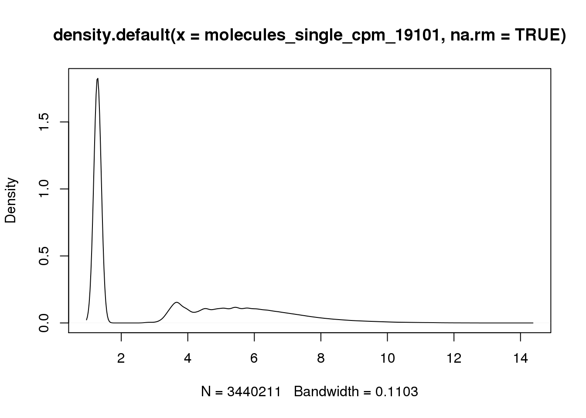
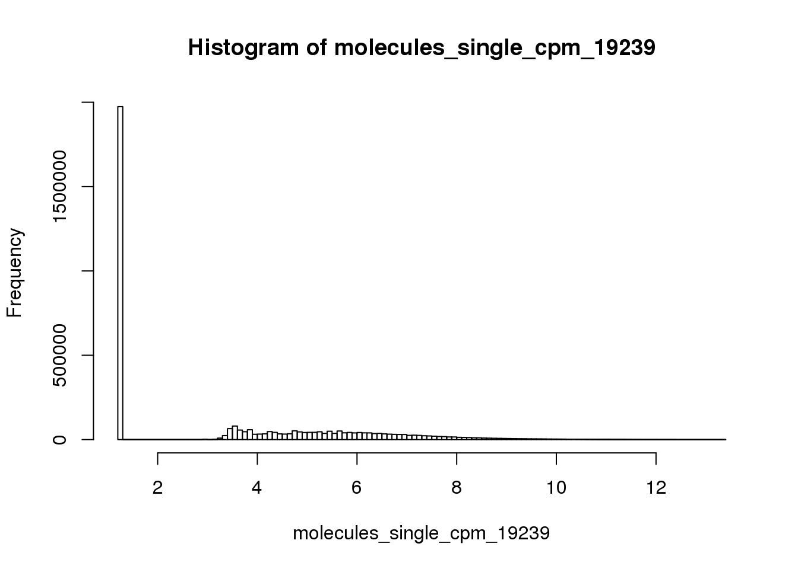
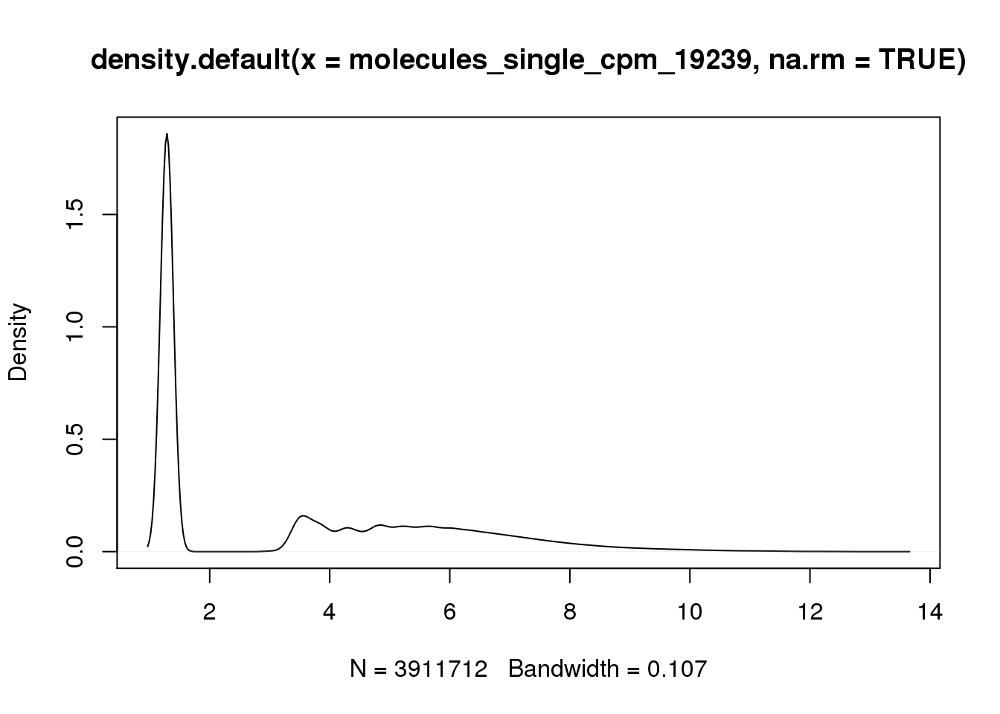
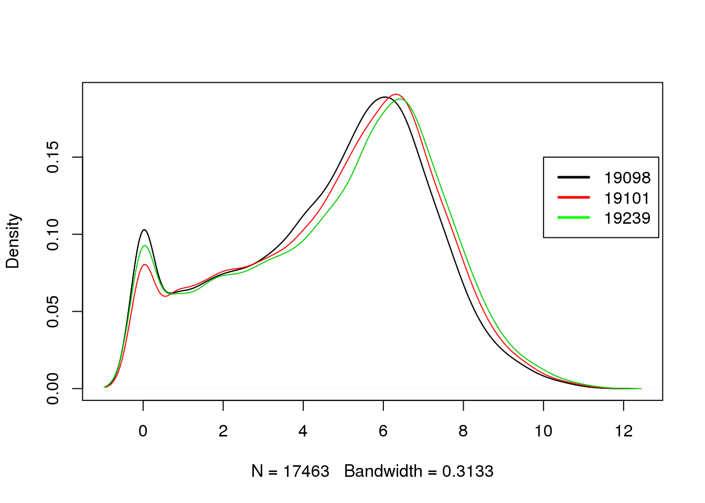

Deteced genes and total molecule counts per cell
Po-Yuan Tung
2015-02-25
Last updated: 2015-09-14
Code version: 11a61e12229c07d54ae50b9a5db91ff78b59c4e4
source("functions.R")
library("limma")
library("edgeR")
library(ggplot2)
theme_set(theme_bw(base_size = 16))From previous analysis, we found that 19098 has fewer reads but more molecules. One of the possible cause is that there are more lowly expressed genes being detected in 19098.
Prepare single cell molecule data
Input annotation
anno <- read.table("../data/annotation.txt", header = TRUE,
stringsAsFactors = FALSE)Input molecule counts
molecules <- read.table("../data/molecules.txt", header = TRUE,
stringsAsFactors = FALSE)Input read count
reads <- read.table("../data/reads.txt", header = TRUE,
stringsAsFactors = FALSE)Input list of quality single cells.
quality_single_cells <- scan("../data/quality-single-cells.txt",
what = "character")Keep only the single cells that passed the QC filters and the bulk samples.
reads <- reads[, grepl("bulk", colnames(reads)) |
colnames(reads) %in% quality_single_cells]
molecules <- molecules[, grepl("bulk", colnames(molecules)) |
colnames(molecules) %in% quality_single_cells]
anno <- anno[anno$well == "bulk" | anno$sample_id %in% quality_single_cells, ]
stopifnot(dim(reads) == dim(molecules),
nrow(anno) == ncol(molecules))Remove batch 2 of individual 19098.
molecules_no <- molecules[, !(anno$individual == 19098 & anno$batch == 2)]
reads_single <- reads[, !(anno$individual == 19098 & anno$batch == 2)]
anno_no <- anno[!(anno$individual == 19098 & anno$batch == 2), ]
stopifnot(ncol(molecules_no) == nrow(anno_no))Remove bulk samples.
molecules_single <- molecules_no[, anno_no$well != "bulk"]
anno_single <- anno_no[anno_no$well != "bulk", ]
stopifnot(ncol(molecules_single) == nrow(anno_single))Remove genes with zero count in the single cells
expressed_single <- rowSums(molecules_single) > 0
molecules_single <- molecules_single[which(expressed_single), ]
reads_single <- reads_single[expressed_single, ]remove gene with molecule count larger than 1024 (15 if them)
overexpressed_genes <- rownames(molecules_single)[apply(molecules_single, 1,
function(x) any(x >= 1024))]
molecules_single <- molecules_single[!(rownames(molecules_single) %in% overexpressed_genes), ]collision probability and cpm molecule counts
molecules_single_collision <- -1024 * log(1 - molecules_single / 1024)
molecules_single_cpm <- cpm(molecules_single_collision, log = TRUE)Distribution of molecule counts per gene in each individual
## 19098 (total 142 cells)
molecules_single_cpm_19098 <- molecules_single_cpm[,grep("19098", colnames(molecules_single_cpm))]
hist(molecules_single_cpm_19098, breaks=100)
plot(density(molecules_single_cpm_19098, na.rm = TRUE))
## 19101 (total 197 cells)
molecules_single_cpm_19101 <- molecules_single_cpm[,grep("19101", colnames(molecules_single_cpm))]
hist(molecules_single_cpm_19101, breaks=100)
plot(density(molecules_single_cpm_19101, na.rm = TRUE))
## 19239 (total 197 cells)
molecules_single_cpm_19239 <- molecules_single_cpm[,grep("19239", colnames(molecules_single_cpm))]
hist(molecules_single_cpm_19239, breaks=100)
plot(density(molecules_single_cpm_19239, na.rm = TRUE))
## plot all together
plot_multi_dens <- function(s)
{
junk.x = NULL
junk.y = NULL
for(i in 1:length(s)) {
junk.x = c(junk.x, density(s[[i]])$x)
junk.y = c(junk.y, density(s[[i]])$y)
}
xr <- range(junk.x)
yr <- range(junk.y)
plot(density(s[[1]]), xlim = xr, ylim = yr, main = "")
for(i in 1:length(s)) {
lines(density(s[[i]]), xlim = xr, ylim = yr, col = i)
}
}
## the input of the following function MUST be a numeric list
plot_multi_dens(list(molecules_single_cpm_19098, molecules_single_cpm_19101, molecules_single_cpm_19239))
legend(12,1.8, c("19098","19101", "19239"), lwd=c(2.5,2.5),col=c("black", "red", "green"))
number of genes detected and total molecule counts
## number of genes detected in each cell
anno_single$number_genes <- colSums(molecules_single > 0)
## number of total molecule counts in each cell
anno_single$total_molecule <- colSums(molecules_single)
## plot
ggplot(anno_single, aes(x = total_molecule, y = number_genes, col = as.factor(individual), shape = as.factor(batch))) + geom_point(size = 3, alpha = 0.5)
Session information
sessionInfo()R version 3.2.0 (2015-04-16)
Platform: x86_64-unknown-linux-gnu (64-bit)
locale:
[1] LC_CTYPE=en_US.UTF-8 LC_NUMERIC=C
[3] LC_TIME=en_US.UTF-8 LC_COLLATE=en_US.UTF-8
[5] LC_MONETARY=en_US.UTF-8 LC_MESSAGES=en_US.UTF-8
[7] LC_PAPER=en_US.UTF-8 LC_NAME=C
[9] LC_ADDRESS=C LC_TELEPHONE=C
[11] LC_MEASUREMENT=en_US.UTF-8 LC_IDENTIFICATION=C
attached base packages:
[1] stats graphics grDevices utils datasets methods base
other attached packages:
[1] ggplot2_1.0.1 edgeR_3.10.2 limma_3.24.9 knitr_1.10.5
loaded via a namespace (and not attached):
[1] Rcpp_0.12.0 digest_0.6.8 MASS_7.3-40 grid_3.2.0
[5] plyr_1.8.3 gtable_0.1.2 formatR_1.2 magrittr_1.5
[9] scales_0.2.4 evaluate_0.7 stringi_0.4-1 reshape2_1.4.1
[13] rmarkdown_0.6.1 labeling_0.3 proto_0.3-10 tools_3.2.0
[17] stringr_1.0.0 munsell_0.4.2 yaml_2.1.13 colorspace_1.2-6
[21] htmltools_0.2.6